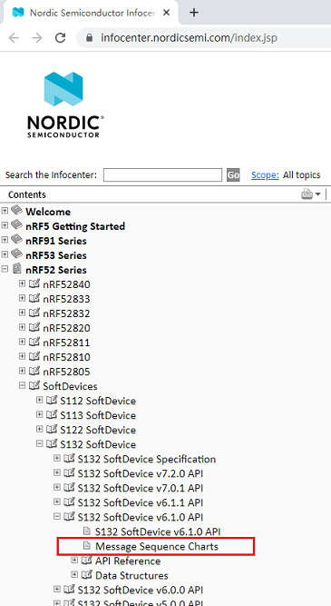
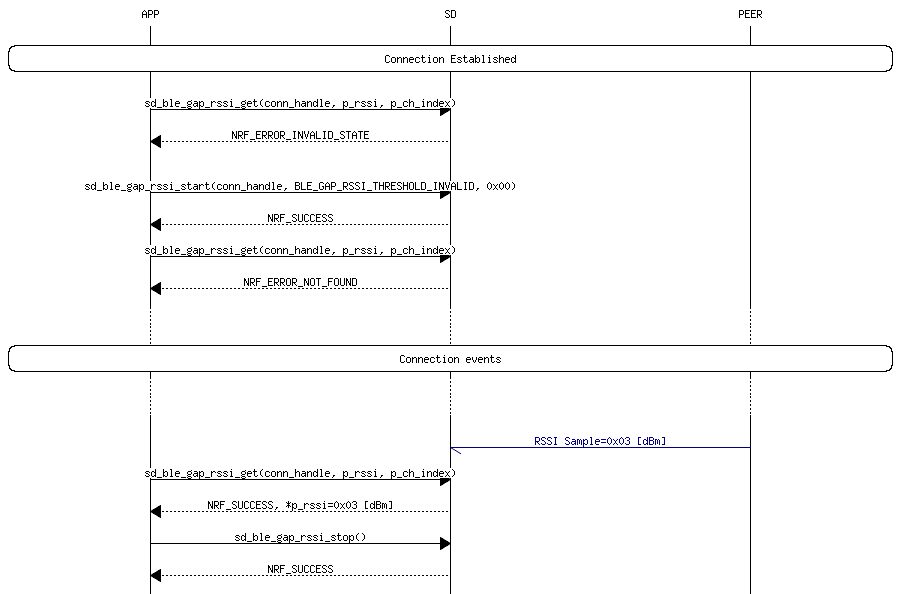

nRF52832开发记录-消息序列图 发表于 2020-07-21 更新于 2020-11-04 分类于 nRF52832 ， BLE 在Nordic协议栈操作中,操作流程给出了消息流程图，非常直观接合代码一起看将最大限度提高工作效率消息流程图在Noridc 文档中心https://infocenter.nordicsemi.com/协议栈版本不同会有些区别。以nRF52系列 S132协议栈为例: RSSI get sample